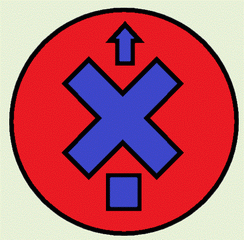

Добро пожаловать туда, где можно похвастаться с воим iPod и рассказать, где вы с ним были. Хотите ловеселиться вместе с нами? Все, что вам для этого нужно, - это любой iPod: от ранней классической версии до самой современной нанаверсии - самого маленького iPod с фотографиями лучшего качества и с цифровой камерой. Просто сфотографируйте свой iPod в любимом месте, и мы будем рады поместить этот снимок на сайте myPod. Итак, чего же вы ждете?
я и мой йапод в сиэтле. здесь видны дождевые облака и башня, и не видно 638 кафе
Начало css не понятно ничего
Цитаты Стэтхэма
Я буду мужиком, пока по земле еще ходят настоящие женщины, те женщины, которые не пахнут сигаретами и пивом, которые обладают природным обаянием и добротой, в которых еще не умер инстинкт материнства. А не те крашенные стервы, общающиеся матом, потерявшие женственность, которых интересуют только красивые шмотки, дорогие машины и бесконечные тусовки, которые готовы раздвинуть ноги перед толстым кошельком.